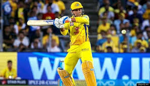
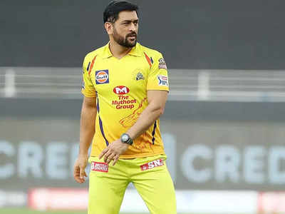
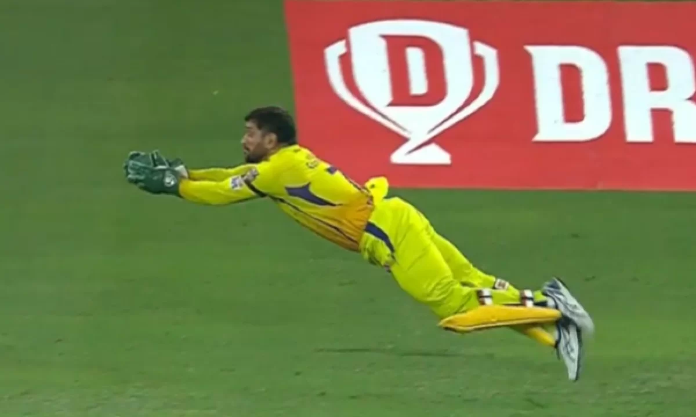
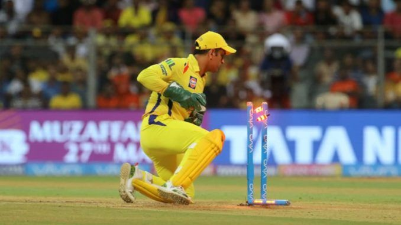
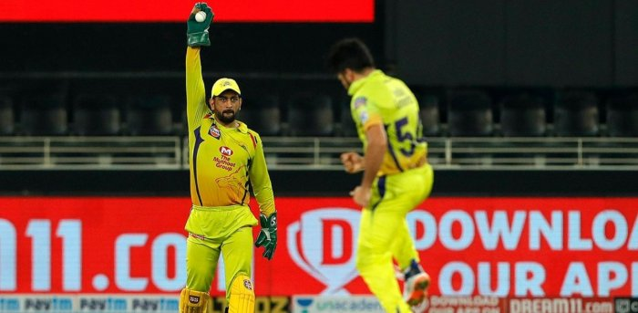

WHAT MAKES HIM THINK WISELY?
Display of emotions is not something that one associates with Mahendra Singh Dhoni but the enigmatic former
India skipper says he feels as strongly as anyone else, just that he is good at controlling the negative ones a
lot better than most.
He has been the eternal ‘Captain Cool’ of Indian cricket but the two-time world champion leader said he goes through
the entire gamut of emotions at every triumph and debacle.